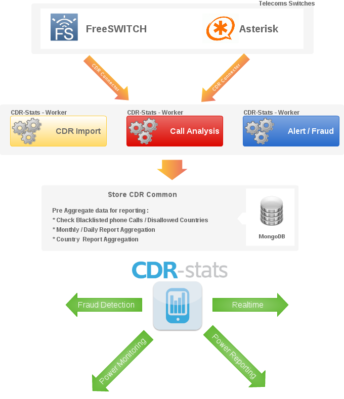

Getting Started¶
| Web: | http://www.cdr-stats.org/ |
|---|---|
| Download: | http://www.cdr-stats.org/download/ |
| Source: | https://github.com/Star2Billing/cdr-stats/ |
| Keywords: | voip, freeswitch, asterisk, django, python, call, reporting, CDR, mongoDB |
–
CDR-Stats is free and open source call detail record analysis and reporting software for Freeswitch, Asterisk and other type of VoIP Switch. It allows you to interrogate your CDR to provide reports and statistics via a simple to use, yet powerful, web interface.
It is based on the Django Python Framework, Celery, SocketIO, Gevent and MongoDB.
Overview¶
CDR-Stats is an application that allows browsing and analysing CDR (Call Detail Records).
Different reporting tools are provided:
- Dashboard: Overview of call activity
- Search CDR: Search, filter, display and export CDR
- Overview: Analyse call traffic by hour, day and month
- Daily Comparison: Compare call traffic day on day
- Real-Time Statistics: Show concurrent calls in realtime by switch
- Concurrent Calls: Concurrent Calls through the day updated in real-time
- Country Report: Call statistics by country
- World Map: Call statistics overlaid on a world map
- Mail daily aggregated reports
- Threat Control: Detect abnormal call patterns
- Destination Alerts: Unexpected destination alerts
CDR Stats uses MongoDB, a scalable, high performance database system used to analyse large quantities of CDR data. MongoDB is an open source, document-oriented database designed with both scalability and developer agility in mind.
CDR-Stats supports Freeswitch and Asterisk using connectors that get the CDR. Connectors for other switch systems can be built. Additionally CDR-Stats features a CSV upload facility so that CDR from virtually any source can be imported and analysed by CDR-Stats.
Dashboard¶
User Dashboard provides realtime monitoring of the most relevant metrics of connected switches.

Admin Panel¶
The Admin Panel allows the administrators to configure the entire reporting platform, import CDR in csv format, configure users, switch connections and automatic alarms.

Architecture¶
CDR-Stats uses MongoDB as the underlying CDR store. MongoDB allows querying and analysis of many millions of records without noticeable loss of performance, and can easily be scaled as demand increases.
Postgresql is used for managing CDR-Stats in terms of users and managing the web framework, Django.
Celery, a task manager runs in the background, and monitors the CDR coming into the system, and alerts the systems administrator when unusual behaviour is discovered. What is determined as unusual behaviour is determined by the administrator who can configure alerts for increases in dropped calls, average length of calls, or calls to unusual destinations.
At the moment Freeswitch and Asterisk are supported, for other switches such as OpenSIPs or Kamailio, connectors can be built to connect to the CDR database store and import them in realtime to CDR-Stats.
Features¶
Many features are provided on CDR-Stats, from browsing millions of CDRs, providing efficient search facilities to build reporting such as monthly reports, concurrent calls view, and comparing call traffic with previous days.
Telephony Reporting Leading open source switches Freeswitch, Asterisk, supported as standard. Multi-switch monitor traffic from many switches in one location Multi-tenant allowing many customers to monitor their own CDR on one instance of CDR-Stats. Distributed Runs on one or more machines. Supports broker clustering and HA. New workers can be set up without central configuration. Fraud detection Visualise traffic which helps to identify unusual patterns. Fraud Alert Send emails to the administrator when fraud are or suspicious paterns occur Error Emails Can be configured to send emails to the administrator if a tasks fails. Import CDR Import CDR files in custom format World Map view see where the traffic originates and terminates on a Map Compare traffic see how your traffic evolves, and patterns change. Mail Reporting Send daily mail reports of telecoms traffic Realtime Reporting Traffic displayed in realtime Blacklist Blacklist Phone number patterns to receive alarms Geographic alerts Set alert if calls go to disallowed countries Concurrent calls Realtime reporting of concurrent calls
Utility¶
CDR-Stats is a simple-to-use tool to provide easy analysis of calls. It is a recommended addition to telephony servers, whether it be a simple in-house PBX or large capacity VoIP switch. It shows in in near realtime what calls are going through, can detect errors and failures, and alert the systems administrator is unexpected traffic is noted.